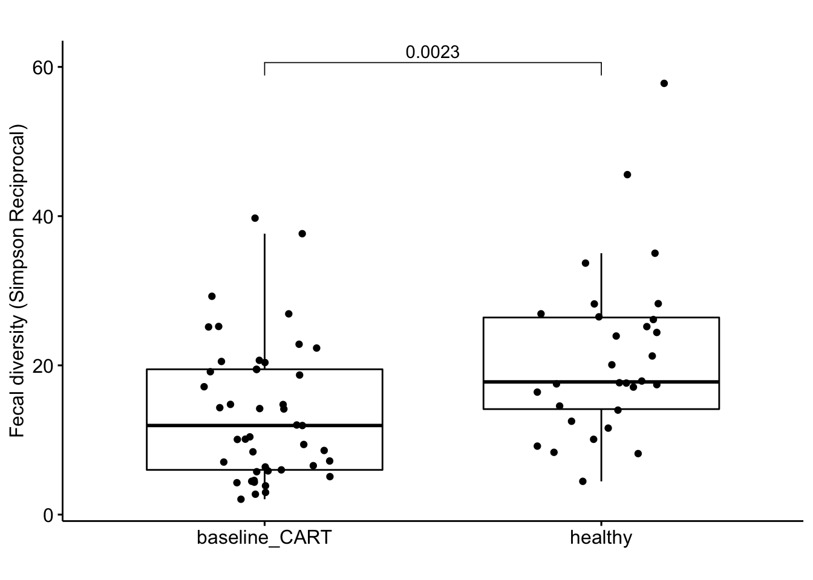
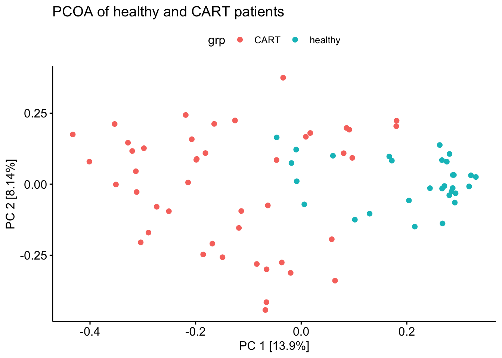
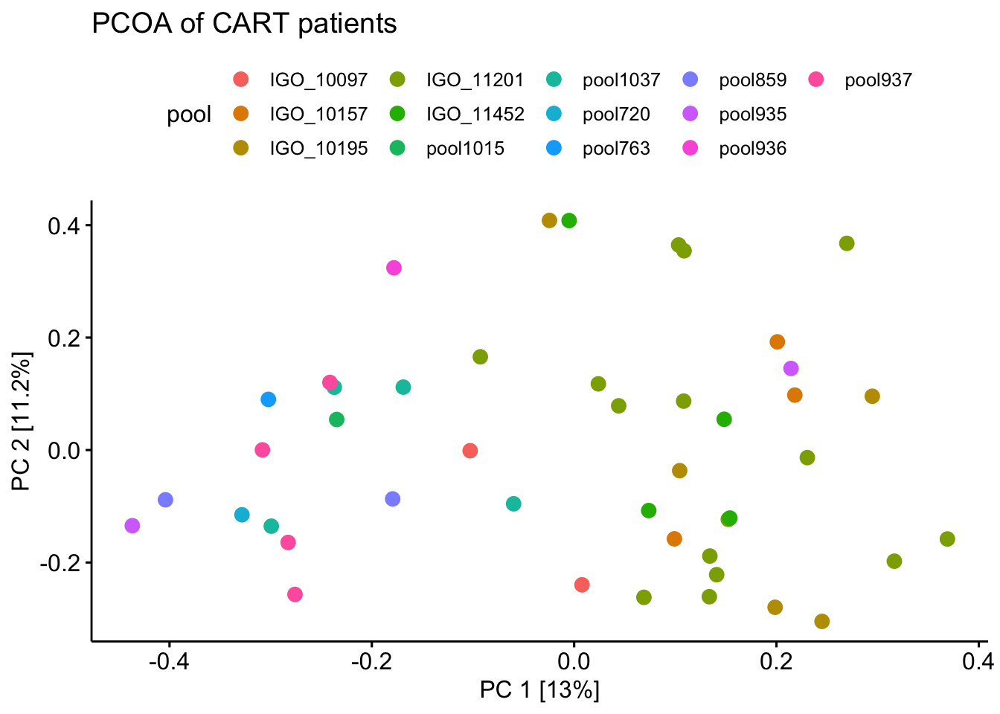

Chapter 3 Fig 2
3.1 2B: stacked bar chart.
library(tidyverse)
library(vdbR)
library(ggpubr)
connect_database('~/dbConfig.txt')
get_table_from_database("asv_annotation_blast_color_ag");# my table of the CART stool cohort
stb <- read_csv('data/amplicon/stool/combined_2_meta.csv')
# get the counts from database and also the color for the asv
counts_data <- get_counts_subset(stb$sampleid)dat <- counts_data %>%
select(asv_key:count_total, count_relative) %>%
left_join(asv_annotation_blast_color_ag %>%
select(asv_key,color_label_group_distinct), by = "asv_key")
# there are some ASVs that don't have a color with it, but can use the color for the genus level
color_group <- dat %>%
split(is.na(.$color_label_group_distinct))
# find the genus for these asv
get_table_from_database('asv_annotation_blast_ag')
no_color <- color_group %>%
pluck('TRUE') %>%
distinct(asv_key) %>%
inner_join(asv_annotation_blast_ag %>%
select(asv_key, genus))
# find the colors for these genera
genera_colors <- no_color %>%
distinct(genus) %>%
inner_join(asv_annotation_blast_color_ag %>%
distinct(genus, color_label_group_distinct))
# the full df for the no color genera
no_color_df <- no_color %>%
left_join(genera_colors)
no_color_df_full <- color_group %>%
pluck('TRUE') %>%
select(-color_label_group_distinct) %>%
left_join(no_color_df %>%
select(- genus))
# so if the genus is unknown then it's gonna be assigned "other" gray color
# the question is do we go one taxa level higher or make a new color base and shades for the new asv
# after discussing with Tsoni, we decided that it's ok to assign gray to the unknown genus
# merge the new no_color_df_full to the original df
dat <- bind_rows(
no_color_df_full,
color_group %>%
pluck('FALSE')
)
dat %>% write_csv('data/the_data_to_make_panel_B.csv')# the color palette (inherited from Ying, used in lots of project in our lab, the palette used in the NEJM paper Fig 2D https://www.nejm.org/doi/full/10.1056/NEJMoa1900623)
asv_color_set <- asv_annotation_blast_color_ag %>%
distinct(color,color_label_group_distinct,color_label_group,color_base) %>%
select(color_label_group_distinct, color) %>%
deframe()# calculate the beta diversity between the samples which deicide the order of the samples in the plot
cbd <- compute_beta_diversity_and_tsne(sampleid = dat$sampleid,
taxonomy = dat$color_label_group_distinct,
count = dat$count);
#compute beta diversity
cbd$compute_beta_diversity()## Time:Composition_matrix:
## Time difference of 0.009876013 secs
## Time:Bray-Curtis matrix:
## Time difference of 0.002395868 secs#get beta diversity
d_beta <- cbd$get_betadiversity()
#compute hierarchical cluster
hc <- hclust(as.dist(d_beta), method = 'complete')
dend <- as.dendrogram(hc)
sample_dendogram_order <- labels(dend)
# dividing the samples to lower and higher diversity
div_order <- stb %>%
arrange(simpson_reciprocal) %>%
pull(sampleid)
###
# how about splitting the above dendrogram order into the low and higher diversity groups
div_med <- median(stb$simpson_reciprocal)
lower_samp <- stb %>%
filter(simpson_reciprocal <= div_med) %>%
pull(sampleid)
lower_samp_o <- sample_dendogram_order[sample_dendogram_order %in% lower_samp]
higher_samp_o <- sample_dendogram_order[!sample_dendogram_order %in% lower_samp]
dat$sampleid = factor(dat$sampleid,levels = c(lower_samp_o, higher_samp_o))
ggplot(dat,aes(sampleid, count_relative, fill = color_label_group_distinct) ) +
geom_bar(stat = "identity", position="fill", width = 1) +
theme_classic() +
labs(title = '',
ylab = 'Relative counts') +
theme(axis.text.x = element_text(angle = 90),
axis.text.y = element_blank(),
legend.position = "none") +
scale_fill_manual(values = asv_color_set) +
ggsave('figs/amplicon/stacked_bar_sorted_with_hclust_lower_and_higher_diversity.pdf', width = 7, height = 5)
3.2 2C: alpha and beta diversity between CART patients and healthy volunteers
3.2.1 alpha diversity (Simpson’s reciprocal)
library(vdbR)
connect_database('~/dbConfig.txt')
get_table_from_database("healthy_volunteers_ag")
get_table_from_database("asv_alpha_diversity_ag")## [1] "table asv_alpha_diversity_ag is loaded and filtered for duplicates. Only the replicate of highest coverage is retained."# a total of 75 samples
alpha <- bind_rows(
stb %>% select(sampleid, simpson_reciprocal) %>% mutate(grp = 'baseline_CART'),
asv_alpha_diversity_ag %>%
select(sampleid, simpson_reciprocal) %>%
inner_join(healthy_volunteers_ag %>% select(sampleid), by = "sampleid") %>%
mutate(grp = 'healthy')
) %>%
distinct(sampleid, .keep_all = T)
alpha %>%
ggboxplot(x = 'grp', y = 'simpson_reciprocal', add = 'jitter',
title = '', ylab = 'Fecal diversity (Simpson Reciprocal)', xlab = '',
palette = c('#ED0000','#00468B')) +
stat_compare_means(comparisons= list(c('healthy', 'baseline_CART')),
label= "p.format",
method= 'wilcox.test')
3.2.2 beta diversity (PCOA of Bray-Curtis)
library(vdbR)
connect_database('~/dbConfig.txt')
healthy <- healthy_volunteers_ag %>%
inner_join(asv_alpha_diversity_ag, by = c("sampleid", "oligos_id"))
cts <- get_counts_subset(c(stb$sampleid, healthy %>% pull(sampleid)))
# a total of 75 samples counts. there are 3 healthy samples I don't have count .
nsamp <- cts %>%
distinct(sampleid) %>%
nrow
all_pheno <- bind_rows(healthy %>%
select(sampleid) %>%
mutate(grp = 'healthy', center = 'healthy'),
stb %>% select(sampleid, center) %>%
mutate(grp = 'CART') %>%
select(sampleid, grp, center)
) %>%
ungroup %>%
distinct(sampleid, .keep_all = T) %>%
inner_join(asv_alpha_diversity_ag %>%
distinct(sampleid, .keep_all = T) %>%
distinct(path_pool, sampleid))
# filter >0.01% in more than 25% samples
keepa <- cts %>%
filter(count_relative > 0.0001) %>%
count(asv_key) %>%
filter(n > floor(nsamp * 0.25)) %>%
pull(asv_key)
cts_fil <- cts %>%
filter(asv_key %in% keepa) %>%
select(sampleid, asv_key,count_relative ) %>%
spread(key = 'asv_key', value = 'count_relative', fill = 0) %>%
column_to_rownames('sampleid')
library(vegan)
dist_ <- vegdist(cts_fil, method = 'bray')
eigen <- pcoa(dist_)$values$Eigenvalues
percent_var <- signif(eigen/sum(eigen), 3)*100
bc <- cmdscale(dist_, k = 2)
bc %>%
as.data.frame() %>%
rownames_to_column('sampleid') %>%
ungroup() %>%
inner_join(all_pheno) %>%
distinct() %>%
ggscatter(x = 'V1', y = 'V2', color = 'grp') +
labs(title = 'PCOA of healthy and CART patients') +
xlab(paste0("PC 1 [",percent_var[1],"%]")) +
ylab(paste0("PC 2 [",percent_var[2],"%]")) +
#theme_void() +
ggsave('figs/PCOA(bray-curtis) of healthy and CART patients.pdf')
# a pcoa at asv level to show they are from different pools and well mixed
cts <- get_counts_subset(c(stb$sampleid))
# filter >0.01% in more than 25% samples
keepa <- cts %>%
filter(count_relative > 0.0001) %>%
count(asv_key) %>%
filter(n > floor(nsamp * 0.25)) %>%
pull(asv_key)
cts_fil <- cts %>%
filter(asv_key %in% keepa) %>%
select(sampleid, asv_key,count_relative ) %>%
spread(key = 'asv_key', value = 'count_relative', fill = 0) %>%
column_to_rownames('sampleid')
dist_ <- vegdist(cts_fil, method = 'bray')
eigen <- pcoa(dist_)$values$Eigenvalues
percent_var <- signif(eigen/sum(eigen), 3)*100
bc <- cmdscale(dist_, k = 2)
mp <- bc %>%
as.data.frame() %>%
rownames_to_column('sampleid') %>%
ungroup() %>%
inner_join(all_pheno) %>%
distinct(sampleid, .keep_all = T) %>%
mutate(pool = str_extract(path_pool, 'Sample.+/')) %>%
mutate(pool = str_replace(pool, 'Sample_','')) %>%
mutate(pool = if_else(str_detect(pool, 'IGO'), str_extract(pool, 'IGO.+$'), pool)) %>%
mutate(pool = str_replace(pool, '_1/|_comple.+$',''))
mp %>%
ggscatter(x = 'V1', y = 'V2', color = 'pool', size = 3) +
labs(title = 'PCOA of CART patients') +
xlab(paste0("PC 1 [",percent_var[1],"%]")) +
ylab(paste0("PC 2 [",percent_var[2],"%]")) +
#theme_void() +
ggsave('figs/PCOA(bray-curtis) (ASV level)of CART patients_pool.pdf', width = 9, height = 9)